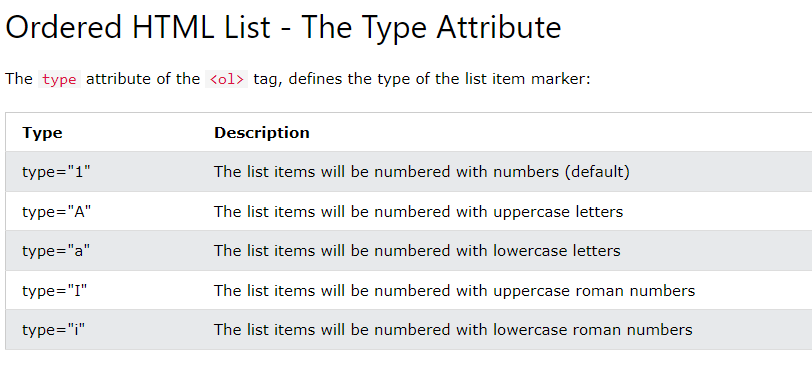

As listas são muito utilizadas em sites e aplicações. Por exemplo, o menu superior que direciona à Home, foi construído como uma lista, isso porque poderia abrigar várias opções de navegação, e cada opção seria um < li > diferente.
As listas podem ser do tipo ordenadas e desordenadas
Basicamente as listas ordenadas apresentam os li com marcadores de contagens que podem ser como os apresentados a baixo e também possuem um parâmetro para dizer qual a contagem inicial dos elementos ordenados
Os marcadores são tipos indicados no próprio HTML, e posuem as possibilidades indicadas a baixo.
Já os maradores das UL são chamados bullet e são configuraçõe de estilo, portanto indicadas por meio de CSS e podem ser do seguintes tipos
Tmabém há a possibilidade de alterar eles e incluir uma mídia como uma imagem por exemplo